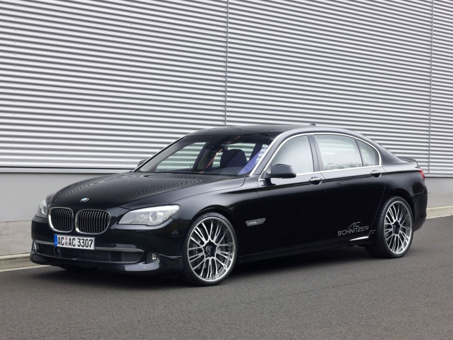
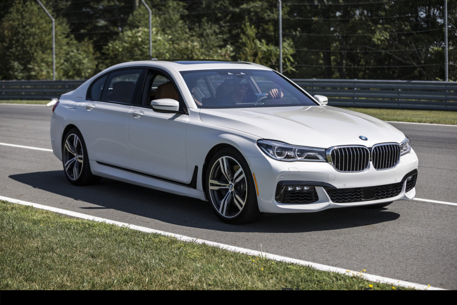

1977.-1986.
Prva generacija serije 7, model E23 proizvodila se od 1977. godine do 1986. godine.
Prva generacija serije 7 je dolazila samo sa benzinskim motorima a to su 2.5, 2.8, 3.0, 3.2, 3.3, 3.6 i 3.6 motori sa 6 cilindara.

BMW 7 E23 1980. godište
1986.-1994.
Druga generacija serije 7, model E32 proizvodio se od 1986. godine do 1994. godine.
Druga generacija serije 7 je dolazila sa istim motorima kao i prva generacija, no imala je dvije pridošlice a to su 3.0 i 4.0 V8 benzinski motori

BMW 7 E32 1990. godište
1994.-2001.
Treća generacija serije 7, model E38 proizvodio se od 1994. godine do 2001. godine.
Treća generacija serije 7 je dolazila sa istim motorima kao i druga generacija, no nadodali su i dizel 2.5 TDS motore sa 6 cilindara, isto tako je to prvi model "sedmice" koji je dolazio sa staklenim krovnim prozorom a ne metalnim kao prijašnji modeli.

BMW 7 E38 2000. godište
2001.-2008.
Četvrta generacija, model E65 i njegova duža verzija E66 se proizvodi od 2001. godine. E67 označava verziju sa zaštitama od vatrenog i kemijskog oružja, a E68 verziju pogonjenu na vodik. Od predstavljanja dobivao je velike kritike na račun dizajna. Prodaja u Europi je počela u studenom 2001., a tri godine poslije je doživio redizajn kojim su kritike ublažene. Osim dizajna velika kritika je upućena i iDrive tehnologiji za koju su mnogi novinari rekli da je komplicirana. E65 serija 7 je prvi automobil s 6 automatskim mjenjačem u svijetu, dok je prethodna generacija imala opciju ručnih i automatskih mjenjača i sportski izgled nova serija 7 je krenula u drugačijem smjeru. E65 generacija je 100% usredotočena na novo 21. stoljeće, dizajn je totalno drugačiji izvana i iznutra, cijeli automobil je okrenut tehnologiji i komforu, 6 automatski mjenjač je jedini u ponudi, a cijeli model je veći i teži od prethodnika. Snaga motora u ovoj seriji 7 je od 218 do 445 ks.
Četvrta generacija dolazila je sa 730i, 735i, 740i, 745i, 750i te 760i benzinskim motorima, a dizel motori u ponudi su bili 730d, 740d te 745d.

BMW 7 E66 2005. godište
2008.-2016.
BMW od rujna 2008. proizvodi petu generaciju serije 7, nazvanu F01. Dizajniran je konzervativnije od svoga prethodnika. Verzija s 140 mm dužim međusovinskim razmakom nazvana je F02. Službeno je predstavljena na Crvenom trgu u Rusiji 8.7.2008. I ova generacija poput prošle donosi mnoge inovacije i tehnologije. Također nova generacija iDrive tehnologije je ugrađena u ovu seriju 7. xDrive je dostupan na 740d i 750i/Li modelima. Poput prethodne i ova serija 7 je dostupna samo s automatskim mjenjačima, E65 je prvi automobil s 6 automatskim mjenjačem a F01 prvi s 8 automatskim mjenjačem na svijetu. Novi 760 model pokreće novi V12 motor snage 544 ks, to je u odnosu na prošli 760 model 99 konjskih snaga više. Međuosovinski razmak je 3070 milimetara.
Peta generacija dolazila je sa istim modelima motora kao i četvrta generacija no unaprijeđeni su na veče brzine
BMW 7 f01 2009. godište
2016.-/
Šesta generacija G11/G12 je u proizvodnju ušla 2016. i proizvodi se još dan danas u 2018. godini
Šesta generacija doalzi sa istim motorima kao i peta generacija no ti motori su još pojačani i unaprijeđivani isto tako su dodane mnoge elektronike i stvari koje olakšavaju vožnju i poboljšavaju iskustvo vozača i putnika, dodane su mnoge sigurnosne mjere također
BMW 7 G12 2017. godište